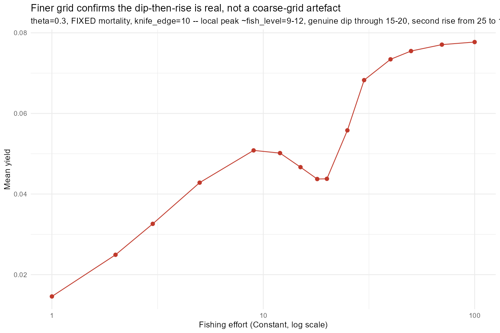
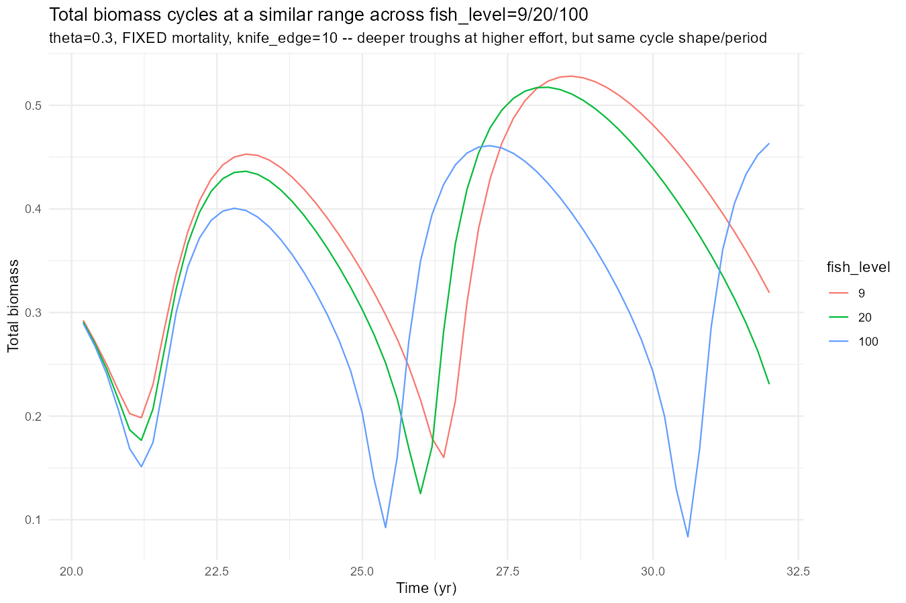
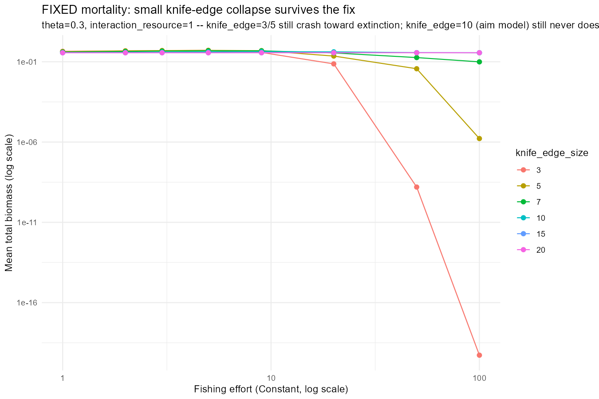
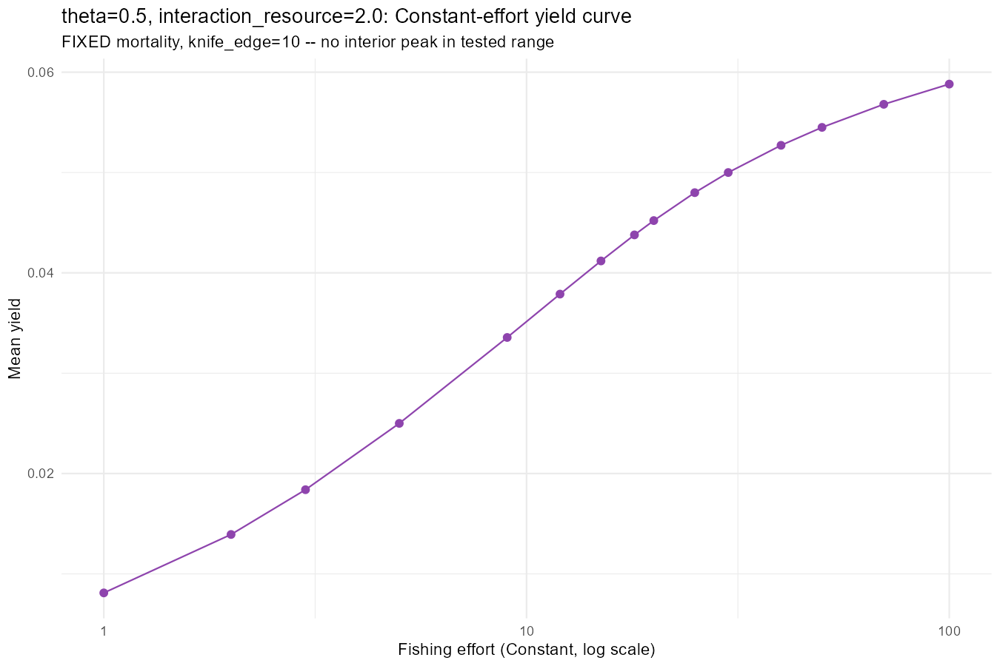
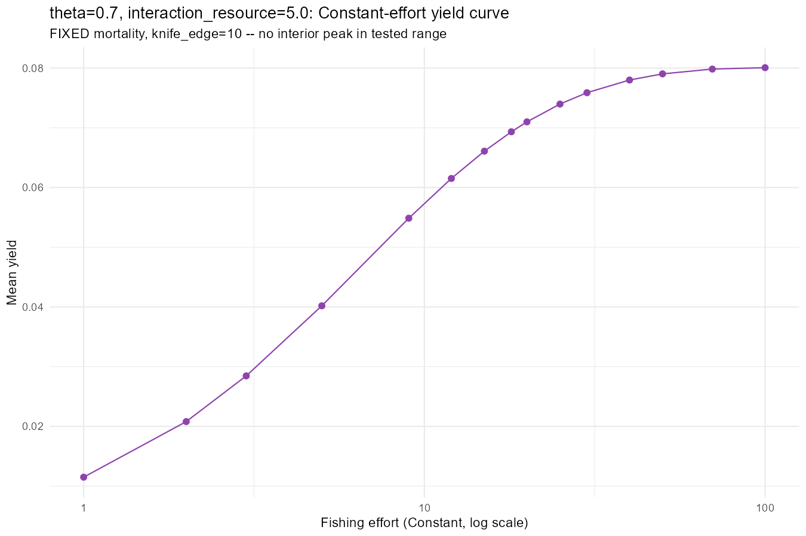
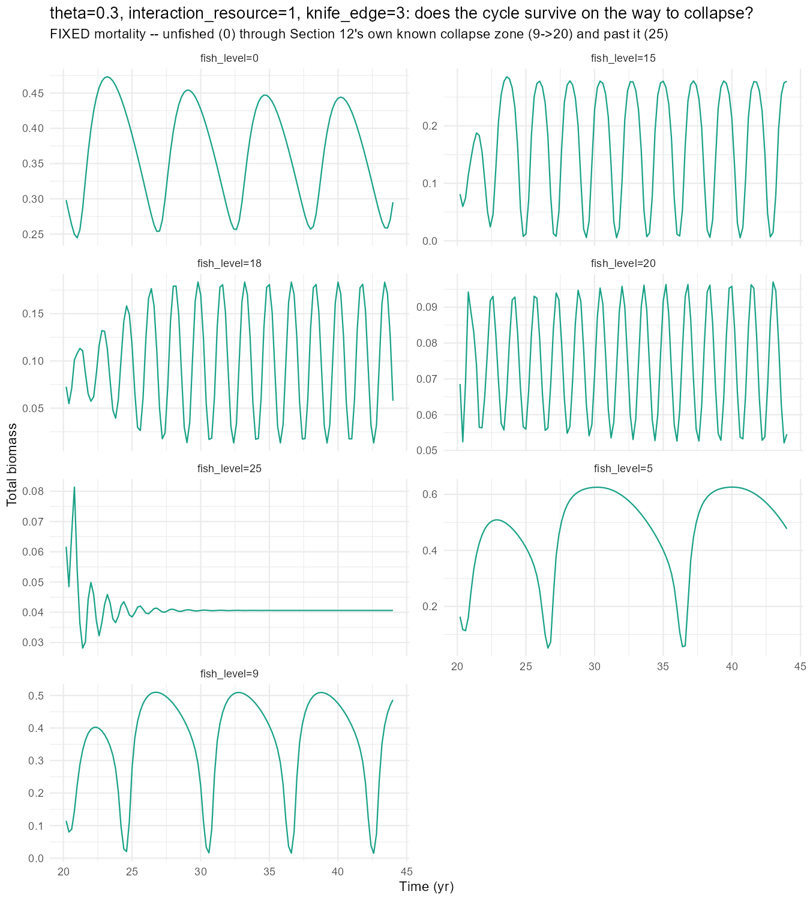
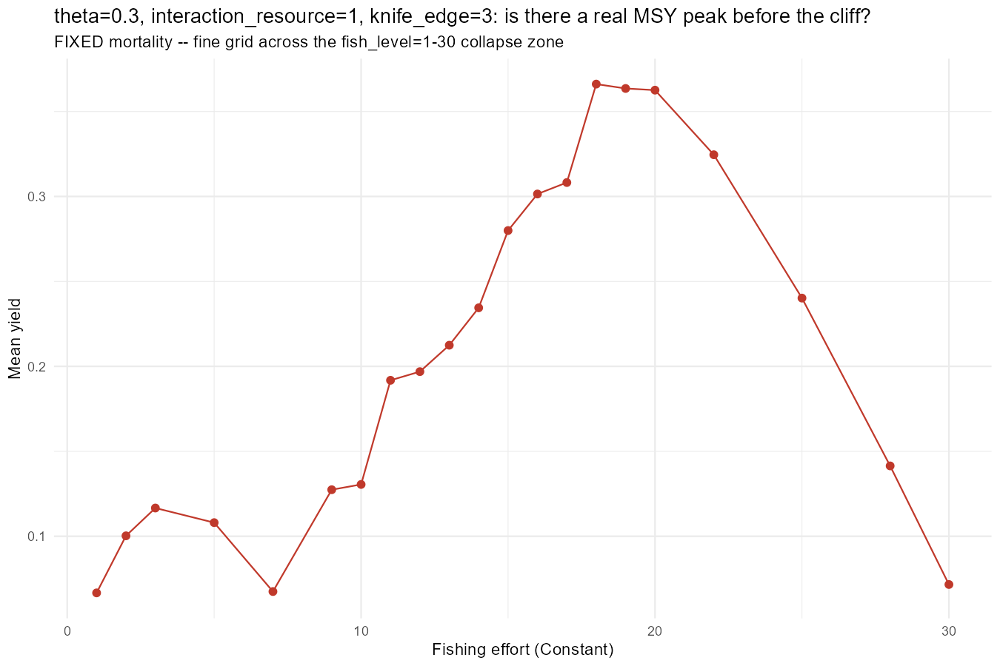
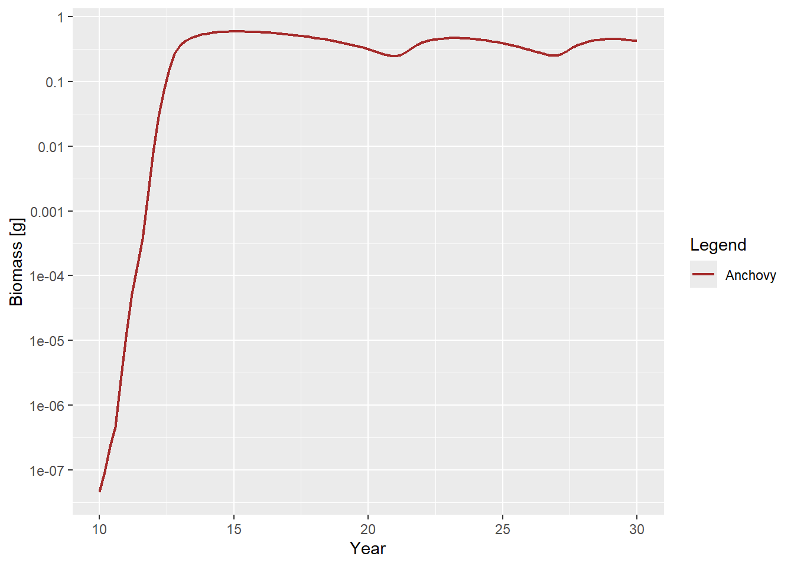
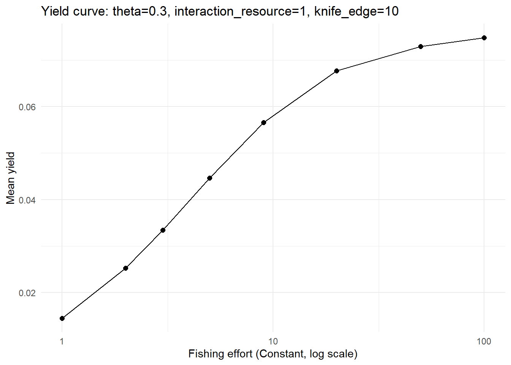

Code
library(mizer)
library(ggplot2)
library(dplyr)Day 40’s own Section 6 found that every model in this project’s Days 39-40 – baseline and every theta variant alike – had been running on a flat, buggy background mortality rather than the paper’s own U-shaped curve, and queued a batch of follow-up work rather than answering it in place. This post covers two further sessions on top of that fix. The first (finding_jams/40_changed_mort_experiments.R, Sections 2-11) closes out the fix’s own immediate follow-ups – does dt tolerate raising, does the dip-then-rise yield shape survive a finer grid, does the knife_edge collapse boundary survive the fix – and then goes looking across theta and interaction_resource for a point that gives a genuinely single-peaked sustainable-yield curve, the thing this project has been chasing since Day 38. None of the four points tested has one. The second session (Sections 12-13) changes the question: instead of hunting for a peak, hunt for an outright collapse. It finds one – and then finds that regime doesn’t have a real MSY either, just a population that cycles faster and faster on its way to extinction. That result sets up the concrete target the next session needs to hit.
Day 40 Section 6’s own “What’s Next” queued five items. All five got done.
Can dt be raised now that the resource step is exact? No – not without switching numerical schemes. dt=0.002 tracks the dt=0.001 reference closely (mean_total within 0.1%, amplitude within 2%), but dt=0.005 and dt=0.01 drift further with every doubling (+6.8%/+13.3% on mean_total, -3.9%/-7.5% on amplitude) – the numerical-diffusion signature of the still-default first-order upwind consumer scheme. A quick check of the documented fix (second_order_w=TRUE + method="tr_bdf2") didn’t help either: it drove the population to numerical extinction (~1e-33) even at dt=0.001, most likely because this project’s own ad-hoc fork-and-settle convention was never built or validated for that discretisation. dt stays at 0.001.

Is the dip-then-rise shape real? Yes. An 11-point grid across fish_level=9-100 confirms it: a local peak at 9-12 (yield ~0.050), a genuine dip through 15-20 (down to ~0.044), then a real second rise from 25 to 100 (up to ~0.078) that overtakes the local peak.

Is fish_level=100 a different dynamical regime, or just a noisier version of fish_level=9’s cycle? A different regime. Total biomass at fish_level=100 cycles visibly faster and deeper than at fish_level=9 or 20, and the harvestable-size compartment – already suppressed at fish_level=9 – is crushed further by fish_level=100. The same compositional-shift mechanism Day 40 found for its threshold schedules turns out to be what drives the dip-then-rise yield curve too: yield keeps climbing past fish_level=25 not because the fishery is healthy, but because a faster-cycling, juvenile-dominated population still throws off catchable biomass even with its harvestable compartment almost entirely gone.

Does the knife_edge collapse boundary survive the fix? Yes, essentially unchanged. knife_edge=3 and 5 still crash to near-extinction by fish_level=100 (1.5e-19 and 4.5e-6 of the unfished reference); knife_edge=7 is still intermediate (27% remaining); knife_edge=10 – this project’s own aim gear – is if anything less responsive under the fix (99.4% of unfished remaining) than the buggy version had suggested; knife_edge=15/20 remain fishing-inert.
Should 40_experiments.R’s own results be superseded? Both, not either/or. Section 1’s own headline claim (a clean single-peaked yield curve at theta=0.3) does not survive. The structural findings – the threshold-schedule comparisons, the compositional-shift mechanism, the knife_edge collapse boundary – do, confirmed independently under the fix rather than overturned by it.
theta x interaction_resource for a Cleaner Pointtheta=0.3, interaction_resource=1 was Day 40’s own choice, but it was made under the buggy mortality. With the fix in place, the natural question is whether a different point in that grid would have served this project’s aim better. Three more points were tested at knife_edge=10, matched against interaction_resource=1.3 (the resource-boosted variant Day 39 had studied) and the two extremes of the Overnight theta x interaction_resource grid’s own fishing_sensitivity column (restricted to theta<1, since theta=1 is already this project’s extensively-studied baseline): theta=0.5, interaction_resource=2 (+0.372, the most positive) and theta=0.7, interaction_resource=5 (-0.885, the most negative).

interaction_resource=1.3 gives a genuinely different failure mode from ir=1’s peak-dip-rise: yield climbs smoothly and monotonically across the whole range, never turning over, while total biomass declines gently and steadily (0.351 unfished to 0.307 at fish_level=100). The knife_edge collapse boundary holds (ke=3/5 collapse, ke>=15 inert), but ke=10 is noticeably more fishing-responsive here (83.8% of unfished remaining at fish_level=100) than at ir=1 (99.4%). Both threshold schedules beat Constant on yield at every boost tested – “troughs” reaches more than 4x Constant’s own yield by boost=30 (0.068 vs. 0.016).

theta=0.5, interaction_resource=2 is the most fishing-responsive point tested anywhere in this project so far: total biomass falls smoothly and steadily from 0.367 (unfished) to 0.229 at fish_level=100, a genuine ~38% decline, with no interior peak. At knife_edge=10, only 58.4% of unfished biomass remains at fish_level=100 – more responsive than every other point tested. The threshold schedule barely matters here: “peaks” almost never fires (the cycle’s own amplitude is too small to cross back above its median threshold), and “troughs” produces a smooth, well-behaved yield/biomass trade-off with no oscillation blow-up anywhere.

theta=0.7, interaction_resource=5 is the opposite extreme. Total biomass rises under fishing at low-to-moderate effort (0.662 unfished to 0.732 at fish_level=9), then declines only slowly, still exceeding the unfished level at fish_level=30 and reaching 87% of unfished even at fish_level=100. No knife_edge tested collapses it – not even ke=3, which crashed to near-extinction at every other theta/ir combination tested. ke=15 and ke=20 actually leave more fish in the sea at fish_level=100 than not fishing at all.
None of the four points – ir=1, ir=1.3, theta=0.5/ir=2, theta=0.7/ir=5 – gives a clean single-peaked sustainable-yield curve within [1,100]. They fail in different directions (recover-and-climb, monotonic-climb, gentle-monotonic-decline, fishing-boosts-biomass), but none of them turns over.
If none of four hand-picked points collapses, the natural next move is a systematic search rather than more one-off guesses. An overnight batch job swept theta (5 values, 1 down to 0.1), interaction_resource (8 values, 0.3 up to 10 – extending below 1 for the first time, on the hypothesis that starving the population of resource access would remove the compositional-shift juvenile boom that had buffered every theta=0.3 variant so far), and knife_edge_size (5 values, 3 to 15), each cell probed across 8 fishing efforts from 1 to 100 – 200 cells, ~1700 simulations, run via Rscript rather than the interactive session. No heatmap: a grid this fine on three categorical axes would have been unreadable as a plot, so the deliverable is a CSV (day40_fine_extinction_sweep.csv) to filter and sort after the fact.
| knife_edge | cells collapsed (of 40 theta x ir pairs) |
|---|---|
| 3 | 21 |
| 5 | 16 |
| 7 | 5 |
| 10 | 0 |
| 15 | 0 |
The result reframes the whole search. knife_edge, not theta or interaction_resource, is the dominant lever. 42 of the 200 cells collapse to under 1% of unfished biomass by fish_level=100, and every single one of them sits at knife_edge<=7. At knife_edge=10 – what every point in Section 2 used – nothing collapses, regardless of which theta/ir combination is paired with it.
The single cleanest example needs no new parameters at all: theta=0.3, interaction_resource=1, knife_edge=3 – this project’s own default theta/ir, just with smaller gear. Its trajectory is a genuine cliff-edge, not a gradual decline: biomass sits above the unfished reference at low-to-moderate effort (fraction=1.05-1.40 across fish_level=1-9, the cultivation effect again), crashes hard between fish_level=9 and 20 (fraction 1.05 -> 0.20), and is functionally extinct by fish_level=50 (4.3e-9) – well before reaching 100, not marginally at it.
The flip side is just as informative. interaction_resource=10 is protective against gear-driven collapse specifically: every theta paired with ir=10 survives even knife_edge=3 with 66-88% of unfished biomass intact, the most robust corner of the whole grid. And theta=0.7/interaction_resource=5 – Section 2’s own most-resilient point – turns out to only be resilient at knife_edge=10; at ke=3 it drops to 45% remaining, a real decline, just not a collapse. Its Section 2 resilience was gear-specific, not a general immunity to fishing pressure.
Finding a regime that collapses raises the obvious next question: does this regime at least have a genuine interior yield peak before it crashes – the sustainable-yield curve this project has been chasing since Day 38, just with a collapse past the edge of it instead of a plateau? Two checks on theta=0.3, interaction_resource=1, knife_edge=3: does it still oscillate on the way to collapse, and does its yield curve have a real MSY.

It oscillates the whole way down – and not by damping out. The cycle’s period compresses as effort rises rather than the population settling into a fixed point or a smooth decay:
| fish_level | mean period (yr) | peaks (in 24yr) | rel_amplitude |
|---|---|---|---|
| 0 (unfished) | 5.7 | 4 | 0.64 |
| 9 | 5.5 | 4 | 1.89 |
| 15 | 2.2 | 10 | 1.93 |
| 18 | 1.7 | 14 | 1.73 |
| 20 | 1.6 | 15 | 0.60 |
| 25 | 1.2 | 20 | 0.97 |
By fish_level=25 the population is cycling nearly annually, still at large relative amplitude, at an ever-shrinking absolute level – a population flickering faster and faster on its way to extinction, not quietly declining.

There is a numerical yield peak (0.366 at fish_level=18) – but it isn’t a real MSY. mean_total biomass declines monotonically across the entire fine grid with no sign of restabilising (0.522 at fish_level=7, already down to 0.107 by the yield peak, 0.011 by fish_level=30, and under 1e-9 by fish_level=50 per Section 3’s own coarser data). The oscillation check confirms the dynamics underneath the “peak” are still rapidly cycling, not settled. This is exactly the artefact Day 40’s own Section 5 caveat warned about: a transient catch spike measured mid-collapse, not a sustainable equilibrium yield. (One data anomaly worth flagging rather than reading into: fish_level=7 shows a yield dip despite having the highest biomass in the whole grid – almost certainly the 12-year averaging window landing on an unusually trough-heavy phase of the still-large-amplitude cycle, the same sampling-window-phase sensitivity flagged elsewhere in this project, not a real feature of that specific effort level.)
So this project now has two clean examples and neither is the target: theta=0.3/ir=1/knife_edge=10 never collapses and never peaks; theta=0.3/ir=1/knife_edge=3 collapses outright and also never peaks – it just fails a different way, by flickering into extinction rather than declining forever without consequence.
The concrete target this project now needs is narrower than “find a peak” or “find a collapse” separately – it’s a regime with a genuine interior yield peak where the population is still actually oscillating (not yet flickering into collapse) at that peak. That’s the precondition for the next real piece of work: applying the threshold-schedule machinery (thresholdFMort(), the peaks/troughs rule this project has built and tested since Day 36) on top of a Constant-effort MSY that means something. Every threshold-schedule comparison run so far – Day 40’s own Sections 2-3, this post’s own ir=1.3/theta=0.5-ir=2/theta=0.7-ir=5 reruns – was layered on a floor that was either an arbitrary constant or a peak this post has since found reason to doubt. A regime with a real, still-cycling MSY is what would let those schedule results actually mean “boosting fishing at the population’s peaks/troughs, on top of its own best sustainable constant effort” rather than “on top of an effort chosen for lack of a better one.”
theta in 5 steps, ir in 8, knife_edge in 5) was deliberately coarse to keep the overnight run tractable – a genuine MSY-with-oscillation regime could easily sit between the tested grid points rather than on one of them.interaction_grid_df) still hasn’t had its own growth-recovery/fishing-sensitivity trade-off read all the way through against this post’s own findings – worth reconciling once a target regime is in hand, so the choice is justified on both axes at once rather than picked from the extinction search alone.Everything above was produced through layers of helper functions accumulated over many days (anchovy_params(), cannibalism_fishing_probe(), run_full_sweep_suite(), and so on, all in finding_jams/40_changed_mort_experiments.R). None of that is visible in the results above, which makes the model itself hard to talk someone through. This appendix builds the same model – theta=0.3, interaction_resource=1, knife_edge=10, the aim model behind every section above – once, directly, with nothing hidden behind a helper function. Every piece is exactly what the rest of this project uses, not a simplified stand-in for it: the paper’s own parameters, the exact analytic resource stepper adopted on Day 40, the same settle-and-rescale procedure used to reach the oscillating state everywhere above.
library(mizer)
library(ggplot2)
library(dplyr)These come from the paper this project is based on – physiological rates (growth, reproduction), the predation kernel’s shape, and the background resource’s own dynamics. Nothing here is mizer-specific; it’s just numbers.
p <- list(
dt = 0.001, dx = 0.1, w_min = 0.0003, w_inf = 66.5,
ppmr_min = 100, ppmr_max = 30000, gamma = 750, alpha = 0.85, K = 0.1,
mu_l = 0, w_l = 0.03, rho_l = 5,
mu_0 = 1, rho_b = -0.25,
w_s = 0.5, rho_s = 1,
w_mat = 10, rho_m = 15, rho_inf = 0.2, epsilon_R = 0.1,
w_pp_cutoff = 0.1, r0 = 10, a0 = 100, i0 = 100, rho = 0.85, lambda = 2
)
theta <- 0.3 # fraction of baseline cannibalism strength kept
interaction_resource <- 1 # this species' access to the background resource
knife_edge_size <- 10 # fishing gear cutoff, in gramsmizer looks up a predator’s diet shape and the resource’s own dynamics by name, so both need a matching function defined before newMultispeciesParams() is called.
The predation kernel says which prey sizes a predator will eat: anything within [ppmr_min, ppmr_max] of its own mass, in a flat “box” – no size in that range is preferred over any other.
norm_box_pred_kernel <- function(ppmr, ppmr_min, ppmr_max) {
phi <- rep(1, length(ppmr))
phi[ppmr > ppmr_max | ppmr < ppmr_min] <- 0
phi[1] <- 0
phi / (sum(phi) * (log(ppmr[2]) - log(ppmr[1])))
}The resource’s own dynamics follow the logistic-plus-immigration equation \(\dot n = \text{immigration} + (r - \mu)n - (r/K)n^2\): ordinary logistic growth toward a carrying capacity \(K\), grazed down by predation mortality \(\mu\) from the fish population, plus a constant trickle of immigration (production entering from outside the modelled size range, keeping the very smallest size classes topped up). mizer’s own default resource stepper takes a single explicit-Euler step of this equation each dt; Day 40 of this project replaced that with the exact analytic solution of the same equation instead, adopted here unchanged because it’s exact at any step size rather than an approximation that only holds for small dt.
exact_logistic_immigration_step <- function(n, rate, capacity, immigration,
mortality, dt) {
result <- n
active <- is.finite(n) & is.finite(rate) & is.finite(capacity) &
is.finite(immigration) & is.finite(mortality) &
rate > 0 & capacity > 0 & immigration >= 0
if (dt == 0 || !any(active)) return(result)
n0 <- n[active]; r <- rate[active]; k <- capacity[active]
i <- immigration[active]; mu <- mortality[active]
a <- r - mu; b <- r / k
next_n <- numeric(length(n0))
# With immigration the quadratic has one positive and one negative root;
# the alternative root formulae avoid cancellation when abs(a) is large.
has_immigration <- i > 0
if (any(has_immigration)) {
idx <- which(has_immigration)
ai <- a[idx]; bi <- b[idx]; ii <- i[idx]
d <- sqrt(ai^2 + 4 * bi * ii)
n_plus <- ifelse(ai >= 0, (ai + d) / (2 * bi), 2 * ii / (d - ai))
n_minus <- ifelse(ai <= 0, (ai - d) / (2 * bi), -2 * ii / (ai + d))
ratio <- ((n0[idx] - n_plus) / (n0[idx] - n_minus)) * exp(-d * dt)
next_n[idx] <- (n_plus - ratio * n_minus) / (1 - ratio)
}
# The zero-immigration limit is handled separately, including rate == mortality.
no_immigration <- !has_immigration
if (any(no_immigration)) {
idx <- which(no_immigration)
az <- a[idx]; bz <- b[idx]; nz <- n0[idx]
value <- numeric(length(idx))
zero_rate <- az == 0
value[zero_rate] <- nz[zero_rate] / (1 + bz[zero_rate] * nz[zero_rate] * dt)
positive <- az > 0 & nz > 0
phi <- -expm1(-az[positive] * dt) / az[positive]
value[positive] <- nz[positive] / (exp(-az[positive] * dt) + bz[positive] * nz[positive] * phi)
negative <- az < 0
exp_adt <- exp(az[negative] * dt)
phi <- expm1(az[negative] * dt) / az[negative]
value[negative] <- nz[negative] * exp_adt / (1 + bz[negative] * nz[negative] * phi)
next_n[idx] <- value
}
# Round-off can only create tiny negative values; the analytic solution is
# non-negative for non-negative initial abundance and immigration.
result[active] <- pmax(next_n, 0)
result
}
plankton_logistic <- function(params, n, n_pp, n_other, rates, dt = 0.1, ...) {
exact_logistic_immigration_step(
n = n_pp, rate = params@rr_pp, capacity = params@cc_pp,
immigration = immigration, mortality = rates$resource_mort, dt = dt
)
}One species, described by the parameters above, dropped into newMultispeciesParams().
kappa <- p$a0 * exp(-6.9 * (p$lambda - 1))
species_params_df <- data.frame(
species = "Anchovy", w_min = p$w_min, w_mat = p$w_mat, m = p$rho_inf + 2/3,
w_inf = p$w_inf, erepro = p$epsilon_R, alpha = p$K, ks = 0, gamma = p$gamma,
q = p$alpha, ppmr_min = p$ppmr_min, ppmr_max = p$ppmr_max,
pred_kernel_type = "norm_box", h = Inf, R_max = Inf, linecolour = "brown",
stringsAsFactors = FALSE
)
params <- newMultispeciesParams(
species_params_df, no_w = round(log(p$w_inf / p$w_min) / p$dx),
lambda = p$lambda, kappa = kappa, w_pp_cutoff = p$w_pp_cutoff,
resource_dynamics = "plankton_logistic"
)Using z0 = z0pre * w_inf ^ z0exp for missing z0 values.resource_rate(params) <- p$r0 * w_full(params)^(p$rho - 1)
immigration <- p$i0 * w_full(params)^(-p$lambda) * exp(-6.9 * (p$lambda - 1))Cannibalism and resource access. interaction_matrix controls how much of a species’ own predation pressure lands on itself; setting it to theta rather than 1 is literally what “cutting cannibalism to 30%” means in this model.
interaction_matrix(params) <- theta
species_params(params)$interaction_resource <- interaction_resourceFishing gear. A knife-edge selectivity: nothing below knife_edge_size grams is caught, everything above it is, at a fixed catchability.
gp <- gear_params(params)
gp$sel_func <- "knife_edge"
gp$knife_edge_size <- knife_edge_size
gp$catchability <- 1
gear_params(params) <- gpBackground mortality. This is the one place this model deliberately departs from mizer’s own default: instead of a flat mortality rate at every size, the paper specifies a U-shaped curve – high for larvae, a minimum around half a gram, rising again toward the adult size. ext_mort<-() is used rather than writing to @mu_b directly so this survives any later parameter change that would otherwise silently recompute it from mizer’s own defaults (the bug Day 40 of this project found and fixed).
w <- w(params)
mu_b <- rep(0, length(w))
mu_b[w <= p$w_s] <- (p$mu_0 * (w / p$w_min)^p$rho_b)[w < p$w_s]
mu_s <- min(mu_b[w <= p$w_s])
mu_b[w >= p$w_s] <- (mu_s * (w / p$w_s)^p$rho_s)[w >= p$w_s]
mu_b <- mu_b + p$mu_l / (1 + (w / p$w_l)^p$rho_l)
mort <- ext_mort(params)
mort[] <- mu_b
ext_mort(params) <- mortThe model is now fully specified. Everything below just runs it.
Starting the population from an arbitrary tiny spectrum and running it forward produces a large, non-physical transient before it finds its way onto the model’s real attractor – so the reliable way to reach the oscillating state is two stages: settle for 10 years first, then rescale down by 1e7 (the settling transient overshoots by many orders of magnitude) before continuing. This is the exact procedure used throughout this project.
# Stage 1: settle from an arbitrary starting spectrum.
n0 <- initialN(params); n0[] <- 0.001 * w(params)^(-1.8)
initialN(params) <- n0
initialNResource(params) <- resource_capacity(params)
settled <- project(params, t_max = 10, dt = p$dt, progress_bar = FALSE)
# Stage 2: rescale and continue with no fishing.
n0 <- initialN(params); n0[] <- finalN(settled) / 1e7
initialN(params) <- n0
npp0 <- initialNResource(params); npp0[] <- finalNResource(settled)
initialNResource(params) <- npp0
sim_unfished <- project(params, t_max = 20, t_start = 10, dt = p$dt, t_save = 0.2,
progress_bar = FALSE, effort = 0)plot(getBiomass(sim_unfished))
It does: after the initial transient, biomass rises and falls on a regular cycle of roughly five to six years, indefinitely, with no fishing at all.
Seed a new run from wherever the unfished trajectory ended up – a real point on the cycle, not an arbitrary starting spectrum – then project forward 12 years at each of a range of constant fishing efforts, and average the yield over the second half of that window (the first 6 years after an effort change are transient).
n0 <- initialN(params); n0[] <- finalN(sim_unfished)
initialN(params) <- n0
npp0 <- initialNResource(params); npp0[] <- finalNResource(sim_unfished)
initialNResource(params) <- npp0
effort_seq <- c(1, 2, 3, 5, 9, 20, 50, 100)
mean_yield <- sapply(effort_seq, function(effort) {
sim <- project(params, t_max = 12, t_start = 30, dt = p$dt, t_save = 0.2,
progress_bar = FALSE, effort = effort)
mean(getYield(sim)[getTimes(sim) > 36, ])
})
yield_df <- data.frame(effort = effort_seq, yield = mean_yield)ggplot(yield_df, aes(effort, yield)) +
geom_line() +
geom_point(size = 2) +
scale_x_log10() +
labs(x = "Fishing effort (Constant, log scale)", y = "Mean yield",
title = "Yield curve: theta=0.3, interaction_resource=1, knife_edge=10") +
theme_minimal()
Worth saying plainly rather than glossing over: this particular curve is not a clean single peak, for exactly the reasons Sections 1-4 above go through in detail – a local peak around effort 9-12, a genuine dip through 15-20, then a second, larger rise all the way out to 100, driven by the compositional shift rather than a healthy fishery. The model built above is exactly what produces that shape; having it written out this plainly, with nothing hidden behind a helper function, is what makes that mechanism explainable rather than just assertable.